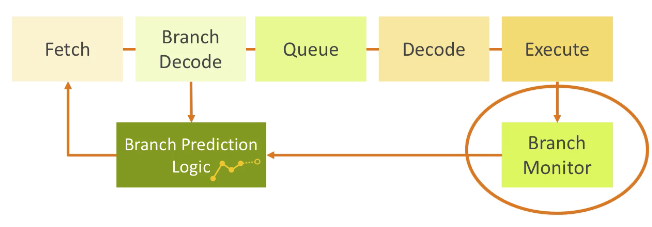
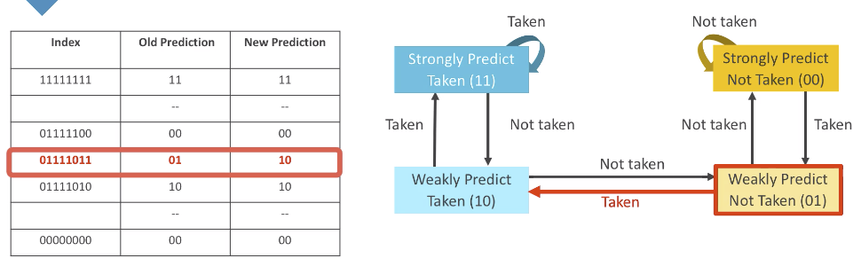
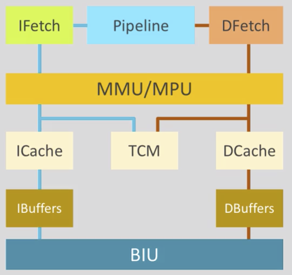
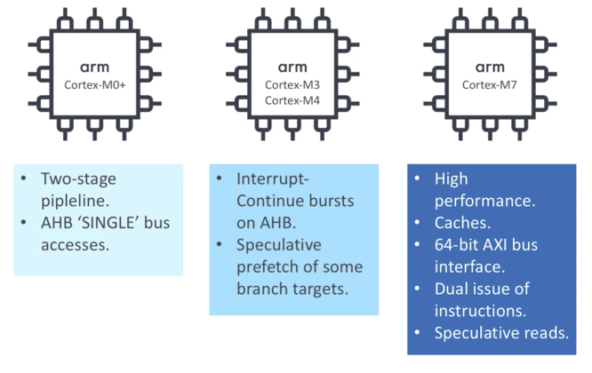

ARM Training: Cortex Processor Behaviors
Simple Sequential Execution Model
After optimization, the result should be exactly the same with “simple sequential execution model”.
Optimization: Instruction Fetching
- Fetch multiple instructions from memory
- Branch
- Predictive fetch and execution
- Branch caches
- Return stack
- The “link register” value is pushed into the stack, and used/popped when return
- E.g. 4 entries of return stack, but my call stack is 5, then miss will happend. Then what to do? Discard all of the content probably will be the most obvious answer.
- Conditional branch prediction
- Shift register of branch execution history, taken is 1’b1 and non-taken is 1’b0
- Use the pattern to predict the next branch
- Use branch monitor’s result to update this prediction table
- Misprediction
- Predict into non-executable memory region, MMU needs to react
- Some architecures require control bits to disable prediction


Optimization: Data Processing
- Multiple execution pipelines
- Multi-decode, multi-issue if no dependency
- Data/structure dependency
- Out-of-order issue/execution
- Multi-decode, multi-issue if no dependency
- Speculative execution of memory access
- Do memory load before the insturction is even issued
- Register renaming
- To solve local register dependencies
- Interrupt
- Cortex-A: imprecise interrupt
- Outstanding instructions have to finish before handling interrupt
- Cortex-R:
- Cancel current outstanding instructions to handling interrupt more quickly
- Load/store to device memory won’t be cancelled. So the access time to device memory has to be limited, because it gates the whole system’s response time
- Cortex-M
- Abandon all outstanding instructures
- Pause-continue: pause all the access to the memories, even to device memory, then continue later. Some may not be able to resume, so to protect them, use
volatilekeyword for those memory locations.
- Cortex-A: imprecise interrupt
Optimization: Memory Access

- Cache
- Replacement strategies: random (most common), round robin, LRU (least recently used)
- ARM has PLI/PLD instructions to load memory into cache
- Prefetch: need to check MMU attributes
- Cache coherent
- Clean / invalidate
- Point of unification: the place in the same system where one data location is synced
- Merging
- Transactions to the same cache line will be merged in the buffers
- For both memory or device access, but not for non-gatherable locations
- Reading will snoop into the buffer for updated value
- Transactions to the same cache line will be merged in the buffers
- Reordering
- Except for non-gatherable, non-orderable, the same periphral, else memory accesses can be reordered for better performance.
- To gurantee memory access order
- Data memory barrier (DMB) / atomic / data synchronization barrier (DSB) / instruction synchronization barrier (ISB)
- Speculative load will not be affected by barriers
Summary
Cortex-A
- Low power
- Shorter pipeline, in-order exe, limited speculation
- High performance
- Longer pipeline, out-of-order exe, all speculation
Cortex-R
- Hard real-time requirement
- In-order
- Data prefetching
- Avoid over-engineering
Cortex-M
